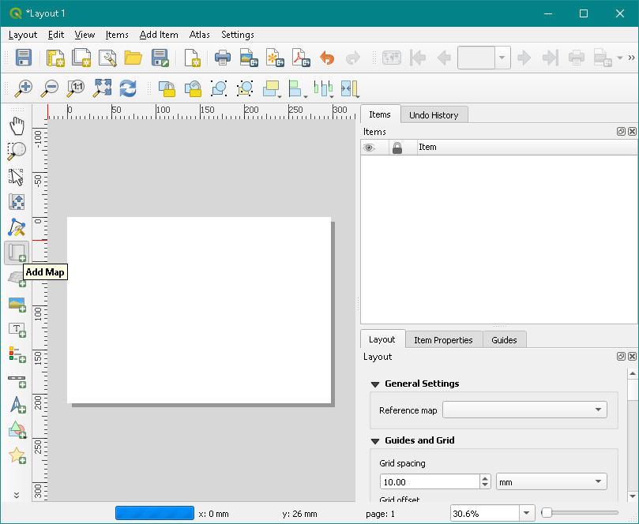

The Coverage Builder plugin allows you to automatically create a vector coverage layer to use for atlas generation.
It uses an input layer's geometries to determine the coverage extent.
It also uses a map from a selected print layout to define the dimensions of the coverage layer rectangles.
Rectangle attribute ids are generated for the coverage layer to be used as inputs for Atlas creation and define the atlas sheets' numbers.
You can create two different types of coverage layer : the regular coverage layer which is particularly suitable for non-linear polygon input layers, or the irregular coverage layer, more adapted to linear shapes.
You first need to create a QGis project containing a vector input layer to define the extents of your coverage layer
Then you create a print layout and add a map object to define the coverage rectangles' dimensions.
Procedure :
You're now ready to launch the plugin. Find the menu entry and click on the Coverage Builder button. The following window should appear.
You need to fill in the form before clicking on Create coverage layer(s) to launch the coverage layer generation. Here are the different options :
The results are written in the specified directory and displayed in the map window.
Result example for a non-linear input layer with regular coverage layer :
And result example for a linear input layer with irregular coverage layer :
Check for any small-areas of the input layer that aren't covered - you may need to edit the output layer by hand.
{kind=link}
{kind=link}
{kind=link}
{kind=link}
{kind=link}